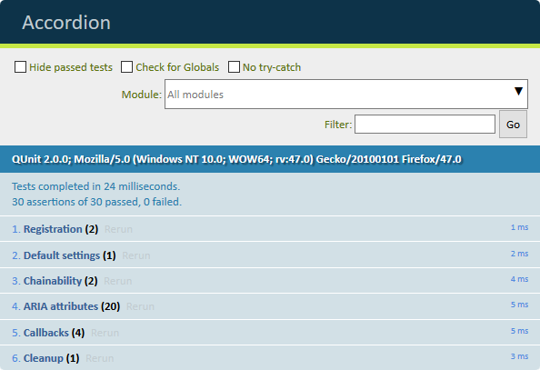

You should start with a mostly empty HTML file, where the qunit-2.0.0.js and qunit-2.0.0.css files will be included, along with the plugin to be tested. I have a simple (and incomplete) Accordion plugin at GitHub for the purpose, built on a solid pattern with just enough functionality (attaches click events, manipulates the DOM, executes callbacks, provides a public method) to give me something to test. Since the plugin was not built with test-driven techniques I wiil have to unit test it as it is, and see if it works as planned You are free to improve the plugin, add functionality if you like, but this is beyond the scope of this article. On the other hand, there are already established, well-built plugins for the purpose, like jQuery Accessible Accordion System, using ARIA or Frend Accordion (vanilla JavaScript actually) so it may not be worth it. But let’s test it first!
The HTML file (let’s call it test.html) needs a couple of empty divs: a <div id="qunit"></div> and a <div id="qunit-fixture"></div>. Inside #qunit-fixture you should insert the HTML that the plugin will act upon, and it will be reset to the this state before each test. Those tests could be written in a tests.js file (like the one I have on Github), or included inline in the same HTML file. The actual tests are included in QUnit.test() methods.
QUnit.test( 'Registration', function( assert ) {
assert.ok( $.fn.accordion, 'registered as a jQuery plugin' );
var defaults = {
headerElement: 'dt',
contentElement: 'dd',
preselected: 'expanded',
onCollapse: $.noop,
onExpand: $.noop,
onInit: $.noop,
onDestroy: $.noop
};
assert.equal( $.fn.accordion.defaults, defaults.toString(), 'default settings are available' );
} );The first test (“Registration”) is checking whether the plugin was successfully initialized and that default settings are globally available. I used the `ok` assertion to test for a “truthy” condition, like the existence of $.fn.accordion that registers when the plugin is loaded. Default settings are then tested using the equal assertion, on a serialized defaults object, to test that plugin defaults are globally available to the developer.
QUnit.test( 'Default settings', function( assert ) {
var $faq = $( '.faq' ),
defaults = $.fn.accordion.defaults,
newDefaults = $.extend( {}, $.fn.accordion.defaults,
{
headerElement: '.accordion-header',
contentElement: '.accordion-panel'
}
);
$.fn.accordion.defaults = newDefaults;
$faq.accordion();
assert.propEqual( $faq.data( 'plugin_accordion' ).settings, newDefaults, 'set new default settings' );
$.fn.accordion.defaults = defaults;
} );During the initialization of the plugin, the default settings are globally available at $.fn.accordion.defaults and can be changed to whatever is needed, for every instance of the plugin in the page. The “Default settings” test sets a couple of new settings, overwriting the default elements that the accordion plugin uses. The plugin should see these new settings and adopt them. The propEqual assertion compares the properties of new settings object to the settings object that the plugin was initialized with (saved at $( ACCORDION_ELEMENT ).data( 'plugin_accordion' ).settings), and those objects should have the same properties. The default defaults are restored afterwards, ready for the next tests.
QUnit.test( 'Chainability', function( assert ) {
var $faq = $( '.faq' );
assert.ok( $faq.accordion().addClass( 'testing' ), 'can be chained' );
assert.ok( $faq.hasClass( 'testing' ), 'successfully chained' );
} );
jQuery plugins should be chainable, meaning that when initialized on a DOM element, the same element should be returned, available for the next method / plugin to act upon. I use the ok assertion again and see if my plugin can be successfully chained. This test might not be needed if your plugin is based on a solid boilerplate, but I have it here for completness’ sake.
QUnit.test( 'ARIA attributes', function( assert ) {
var $faq = $( '.faq' );
$faq.accordion();
assert.ok( $faq.is( '[role="tablist"]' ), 'added role' );
assert.ok( $faq.is( '[aria-multiselectable="false"]' ), 'is not aria-multiselectable' );
} );ARIA attributes are added to the elements, to make the whole thing accessible to assistive technologies. A bunch of ok assertions can be used to check for the correct initialization of various attributes on the DOM elements. I have not included all the possible tests above for brevity. I run through all header and content elements, and check with `ok` assertions for the addition of the correct ARIA attributes on each and every DOM element manipulated by the plugin.
QUnit.test( 'Callbacks', function( assert ) {
var $faq = $( '.faq' );
$faq.accordion( {
onCollapse: function( $header, $content ) {
assert.ok( $header.is( '[aria-selected="false"][aria-expanded="false"]' ), 'collapsed header:' + $header[0].id );
assert.ok( $content.is( '[aria-hidden="true"]' ), 'collapsed content:' + $content[0].id );
},
onExpand: function( $header, $content ) {
assert.ok( $header.is( '[aria-selected="true"][aria-expanded="true"]' ), 'clicked header:' + $header[0].id );
assert.ok( $content.is( '[aria-hidden="false"]' ), 'expanded content:' + $content[0].id );
}
} );
$( $faq.data( 'accordion_headers' ) ).first().trigger( 'click' );
$( $faq.data( 'accordion_headers' ) ).first().trigger( 'click' );
} );User interactions with the DOM must be triggered and/or faked. We can easily trigger click events, and see whether a callback is indeed called, getting back the expected parameters, and that the correct attributes are indeed applied. The ok assertion is again used, to check if clicking on a header is working as expected. I test onCollapse and onExpand callbacks by triggering a click event on the first header element twice.
QUnit.test( 'Cleanup', function( assert ) {
var $faq = $( '.faq' );
$faq.accordion();
$faq.accordion( 'destroy' );
assert.notOk( $faq.data( 'plugin_accordion' ), 'destroyed' );
} );The destroy method is called on the element that the accordion was previously initialized upon, and the notOk test is checking for the existence of the data that the plugin saves on the element, after being “destroyed”
This is how the test.html looks like, if all the tests are successful. Well done! 
Hopefully you can see that QUnit is an easy framework to get you started with unit testing, and how it can be used to test your already written jQuery plugins. Once you get the hang of it, you can move to test-driven development and maybe explore other, more advanced frameworks.